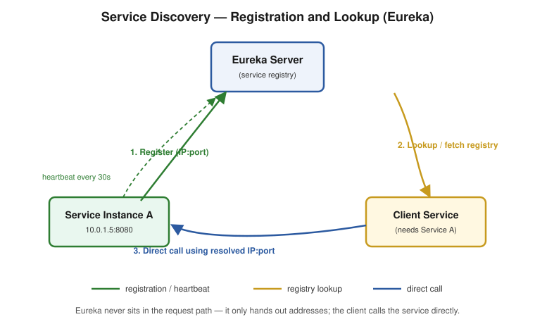
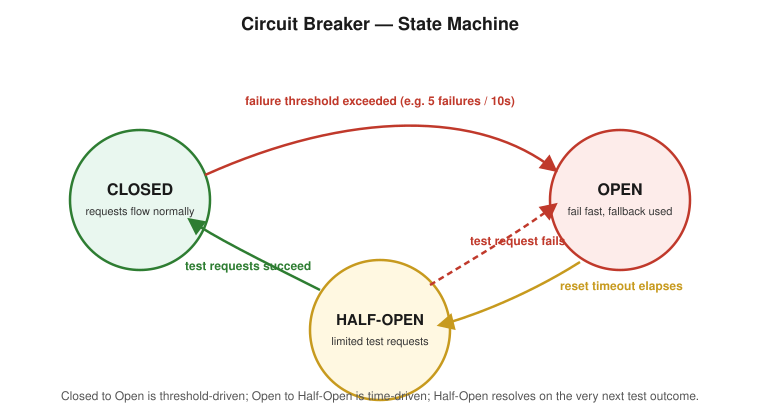
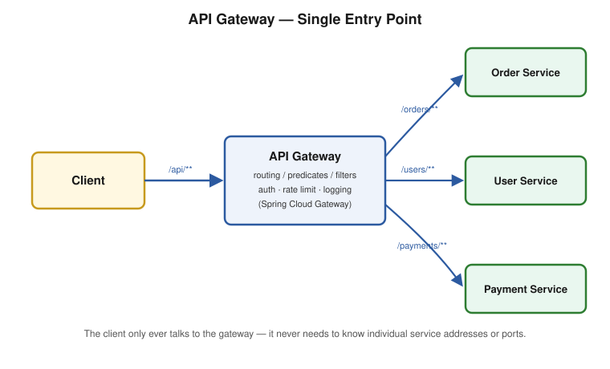
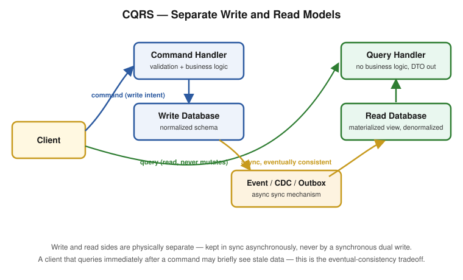
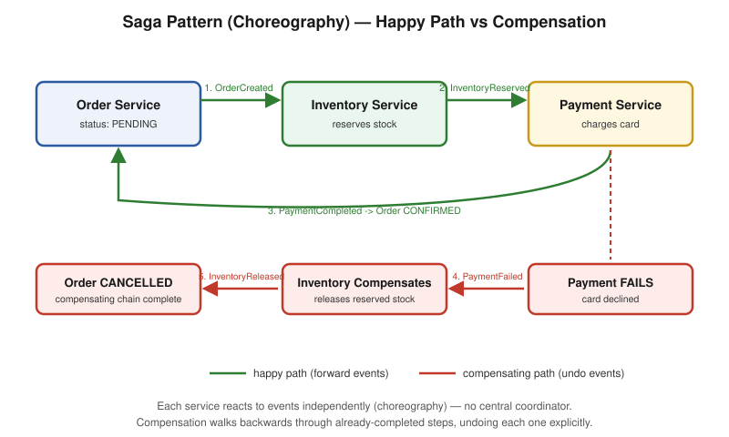

Deepened from your Medium article on Microservice Patterns — Service Discovery, Circuit Breaker, and Load Balancing — plus API Gateway, which your article's own table of contents promised but never actually covered (a genuine gap, filled in here). Every part has a runnable Spring Boot example, an explicit pitfall, and a diagram where the concept is genuinely visual. Legacy-vs-modern library status (Hystrix, Ribbon, Zuul are all in maintenance mode) is called out everywhere it matters — a 10-YOE interviewer will notice if you don't know this.
| # | Part | Covers |
|---|---|---|
| 1 | Service Discovery | Client-side vs server-side discovery, Eureka server/client setup, self-preservation mode, AP vs CP tradeoff |
| 2 | Circuit Breaker | Closed/Open/Half-Open states, Hystrix (legacy) vs Resilience4j (modern), Bulkhead isolation |
| 3 | Load Balancing | Client-side vs server-side, algorithms, Ribbon (legacy) vs Spring Cloud LoadBalancer (modern), session affinity / sticky sessions |
| 4 | API Gateway | Spring Cloud Gateway routing/predicates/filters, Zuul (legacy), cross-cutting concerns |
| 5 | CQRS | Commands vs Queries, materialized views, the real database-sync mechanisms (event sourcing, CDC, outbox), the dual-write trap, eventual consistency, when it's overkill |
| 6 | Saga Pattern | Local + compensating transactions, Choreography vs Orchestration, an end-to-end Order/Inventory/Payment worked example, the isolation gap, and why most candidates fail this question |
| — | Gap Analysis — 10 YOE | Patterns a senior interview expects that the source articles don't cover: Config Server, distributed tracing, service mesh, and more |
The problem service discovery solves, client-side vs server-side discovery, Eureka server/client setup, self-preservation mode, health checks, and the AP vs CP tradeoff. Interview Q&A at the end.
What it is: in a microservices architecture, each service instance runs in its own container/VM, and its network location (IP address, port) is not fixed — instances scale up/down, get rescheduled by Kubernetes, restart after a crash, or move during a deployment. Hardcoding http://10.0.1.5:8080 into every caller breaks the moment that instance disappears.
The fix: a service registry — a centralized directory that every service instance registers itself with on startup, and that every caller queries to resolve a logical service name (order-service) into a live, current network address.

⚠️ Pitfall: the registry itself never sits in the request path. It's consulted once (or cached) to resolve an address; the actual call still goes directly from caller to callee. Confusing service discovery with an API Gateway (Part 4) — which does sit in the request path — is a common conceptual mix-up interviewers listen for.
Client-side discovery (what Eureka implements): the calling service itself queries the registry, gets back a list of healthy instances, and picks one (often via a client-side load balancer — see Part 3). The client owns the decision.
Server-side discovery (what a cloud load balancer or Kubernetes Service implements): the caller sends the request to a single stable address (a load balancer or virtual IP); that component queries the registry and forwards the request. The caller never sees individual instance addresses at all.
| Client-side (Eureka) | Server-side (Kubernetes Service, AWS ALB) | |
|---|---|---|
| Who resolves the address? | The calling service | An infrastructure component in front of it |
| Extra network hop? | No — client calls the instance directly | Yes — request passes through the LB/proxy first |
| Client complexity | Higher — needs a discovery client library | Lower — client just calls one stable name/IP |
| Coupling | Client is coupled to the discovery mechanism | Client is decoupled — discovery is infrastructure's job |
⚠️ Pitfall: Kubernetes' built-in Service discovery (DNS-based, server-side) is why teams running on K8s often don't need Eureka at all — the platform already provides this. Eureka is still asked about heavily in interviews because it's the classic Spring Cloud Netflix answer and still runs in plenty of production systems, but be ready to name the Kubernetes-native alternative if asked "would you still reach for Eureka today."
Add the dependency:
<dependency>
<groupId>org.springframework.cloud</groupId>
<artifactId>spring-cloud-starter-netflix-eureka-server</artifactId>
</dependency>
Enable it on the main class:
@SpringBootApplication
@EnableEurekaServer
public class EurekaServerApplication {
public static void main(String[] args) {
SpringApplication.run(EurekaServerApplication.class, args);
}
}
A standalone Eureka server shouldn't register with itself:
eureka.client.register-with-eureka=false
eureka.client.fetch-registry=false
Why this matters: by default, every Spring Cloud app — including the Eureka server itself, since it's built on the same spring-cloud-starter machinery — tries to act as both a Eureka client and register itself. For a single standalone registry instance, that's pointless (and in a peer-aware multi-node registry setup, you'd instead point each Eureka node at its peers, not disable this entirely). Setting both flags to false keeps a simple single-node registry from registering with itself.
Add the dependency:
<dependency>
<groupId>org.springframework.cloud</groupId>
<artifactId>spring-cloud-starter-netflix-eureka-client</artifactId>
</dependency>
Enable it and configure:
@SpringBootApplication
@EnableDiscoveryClient
public class OrderServiceApplication {
public static void main(String[] args) {
SpringApplication.run(OrderServiceApplication.class, args);
}
}
server.port=8080
spring.application.name=order-service
eureka.client.service-url.defaultZone=http://localhost:8761/eureka/
⚠️ Pitfall:
spring.application.nameis the logical name every other service will look this instance up by — get it wrong (or inconsistent across environments) and service-to-service calls silently fail to resolve. As of Spring Cloud 2020.0+,@EnableDiscoveryClientis technically optional if the Eureka client dependency is on the classpath (auto-configuration picks it up) — but adding it explicitly is still the clearer, more interview-safe answer, since it documents intent.
What it is: Eureka expects every registered instance to send a heartbeat (renewal) every 30 seconds by default. If a server doesn't hear from an instance for 90 seconds (3 missed heartbeats), it normally evicts that instance from the registry. Self-preservation mode kicks in when the Eureka server notices renewals dropping below a threshold (~85%) across all registered instances at once — its interpretation is "this looks like a network partition between me and my clients, not real instance failures," so it stops evicting anything until renewals recover.
Why this is a real production trap: during self-preservation, Eureka may keep serving addresses for instances that are actually dead — callers get connection errors/timeouts calling a "registered" instance that no longer exists. This is Eureka explicitly favoring availability (keep serving a possibly-stale registry) over consistency (only ever serve confirmed-live instances) — a direct instance of the AP vs CP tradeoff from distributed systems theory (Eureka is AP; ZooKeeper/Consul in strict-consistency mode lean CP).
# tuning self-preservation (know these exist; changing them is an operational judgment call, not a default recommendation)
eureka.server.enable-self-preservation=true # default true — disabling is common in local/dev, risky in prod
eureka.server.renewal-percent-threshold=0.85 # the 85% threshold that triggers self-preservation
eureka.instance.lease-renewal-interval-in-seconds=30 # heartbeat interval
eureka.instance.lease-expiration-duration-in-seconds=90 # how long without a heartbeat before eviction is considered
⚠️ Pitfall — the answer that shows real depth: don't just say "Eureka has self-preservation mode." Explain the tradeoff it represents: Eureka would rather risk a client calling a dead instance (and handling that failure with a circuit breaker — Part 2 — or a retry) than risk mass-evicting every instance because of a transient network blip between the registry and its clients. This is precisely why circuit breakers and Eureka are almost always deployed together in practice — Eureka doesn't promise the registry is always accurate, so the caller needs its own protection against calling something that's actually down.
By default, Eureka's "health check" is just the heartbeat — an instance stays registered as long as it keeps renewing its lease, regardless of whether the application is actually healthy. Spring Boot Actuator can wire real health status into this:
eureka.client.healthcheck.enabled=true
management.endpoint.health.enabled=true
With this enabled, Eureka reflects the instance's actual Actuator health status (UP/DOWN), not just "it's still sending heartbeats" — an instance whose app logic is broken but whose JVM/network is fine would otherwise look falsely healthy.
⚠️ Pitfall: without
eureka.client.healthcheck.enabled=true, a service that's technically running but functionally broken (e.g. its DB connection pool is exhausted) still shows asUPin Eureka, and traffic keeps getting routed to it. This is a common real "why is my service still getting traffic when it's clearly failing" production question.
Q: What problem does service discovery solve, and why can't you just hardcode service URLs? Covered above under "The Problem It Solves" — instance addresses change constantly in a dynamic, scaled, containerized environment; hardcoding breaks the moment an instance moves.
Q: Client-side vs server-side service discovery — what's the actual difference, and which does Eureka implement? Covered above — Eureka is client-side (the caller resolves the address itself); Kubernetes Service/cloud load balancers are server-side (an infrastructure component resolves it, client never sees individual addresses).
Q: What is Eureka's self-preservation mode, and why is it dangerous in production if you don't know about it? Covered above under "Self-Preservation Mode" — Eureka stops evicting instances when renewal rates across the board drop below ~85%, assuming a network partition rather than real failures. This can mean serving addresses for genuinely dead instances, which is why pairing Eureka with a circuit breaker downstream is standard practice, not optional.
Q: Is Eureka CP or AP, and what does that mean practically? AP — it favors staying available (serving a possibly-stale registry) over strict consistency (only ever serving confirmed-live instances). Contrast with ZooKeeper, which favors consistency and would rather refuse to answer than serve stale data.
Q: Would you still choose Eureka for a new project today? Depends on the platform. On Kubernetes, the platform's built-in DNS-based service discovery already solves this problem natively, so adding Eureka is often redundant. Eureka (and Spring Cloud Netflix generally) remains common in interviews and in older/legacy Spring Cloud systems that predate widespread Kubernetes adoption — know it, but be ready to name the platform-native alternative.
Q: How does Eureka know if a registered instance is actually healthy, versus just "still sending heartbeats"?
Covered above under "Health Checks and Heartbeats" — by default it only tracks heartbeat renewal, not application health. Enabling eureka.client.healthcheck.enabled=true wires in real Actuator health status so a functionally-broken-but-still-running instance is correctly reflected as DOWN.
The problem it solves, the three states, Hystrix (legacy — corrected from the source article's typos) vs Resilience4j (modern), and the Bulkhead isolation pattern. Interview Q&A at the end.
What it is: in a microservices architecture, Service A calling Service B over the network can fail in ways a monolith's in-process method call never could — B is slow, B is down, the network is congested. Without protection, A's threads pile up waiting on a struggling B, eventually exhausting A's own thread pool/connection pool — and now A is failing too, even though A's own logic was fine. This is a cascading failure: one slow dependency takes down everything calling it, and everything calling that.
The fix — a circuit breaker: wraps a risky call and, after it starts failing repeatedly, stops even attempting the call for a while — failing fast with an immediate fallback instead of piling up blocked/timed-out requests. Exactly the same goal as an electrical circuit breaker: trip before the failure cascades into something worse.

⚠️ Pitfall — the transition types are different in kind: Closed→Open is threshold-driven (count-based: N failures in a window). Open→Half-Open is purely time-driven (a fixed reset timeout, no awareness of whether the service actually recovered). Half-Open→(Closed or Open) is outcome-driven (the very next test result decides it). Interviewers sometimes ask "what triggers each transition" specifically to see if you conflate these three different triggering mechanisms.
Add the dependency and enable it:
@RestController
@SpringBootApplication
@EnableCircuitBreaker
public class SimpleClientApplication {
@GetMapping("/products")
@HystrixCommand(
fallbackMethod = "defaultProductList",
commandProperties = {
@HystrixProperty(name = "execution.isolation.thread.timeoutInMilliseconds", value = "500")
}
)
public List<String> productList() {
RestTemplate restTemplate = new RestTemplate();
URI uri = URI.create("http://localhost:8090/products");
return restTemplate.getForObject(uri, List.class);
}
public List<String> defaultProductList() {
return Arrays.asList("fallback-product");
}
public static void main(String[] args) {
SpringApplication.run(SimpleClientApplication.class, args);
}
}
Note on the source article's code: the original had @HystricCommand/@HystricProperty (a typo — the real annotations are @HystrixCommand/@HystrixProperty) and a fallback method signature that didn't match its @GetMapping method's parameters (Hystrix requires the fallback method's signature to match the primary method's, since it needs to be callable as a drop-in substitute). Corrected above.
⚠️ Pitfall — the single most important fact about Hystrix for a 10-YOE interview: Hystrix entered maintenance mode in late 2018 and Netflix stopped adding new features to it — it is not recommended for new projects. If you inherited a codebase using it, that's a legitimate real-world scenario to discuss, but proposing it as your answer for "how would you add resilience to a new service" is a red flag at senior level. The expected modern answer is Resilience4j.
Add the dependency:
<dependency>
<groupId>org.springframework.cloud</groupId>
<artifactId>spring-cloud-starter-circuitbreaker-resilience4j</artifactId>
</dependency>
Annotation-driven style:
@Service
public class ProductClient {
private final RestTemplate restTemplate;
public ProductClient(RestTemplate restTemplate) {
this.restTemplate = restTemplate;
}
@CircuitBreaker(name = "productService", fallbackMethod = "defaultProductList")
@TimeLimiter(name = "productService")
@Retry(name = "productService")
public List<String> getProducts() {
return restTemplate.getForObject("http://localhost:8090/products", List.class);
}
public List<String> defaultProductList(Throwable t) {
return List.of("fallback-product");
}
}
resilience4j:
circuitbreaker:
instances:
productService:
sliding-window-size: 10
failure-rate-threshold: 50
wait-duration-in-open-state: 10s
permitted-number-of-calls-in-half-open-state: 3
retry:
instances:
productService:
max-attempts: 3
wait-duration: 500ms
What changed structurally, not just cosmetically: Resilience4j composes independent, stackable modules — CircuitBreaker, Retry, RateLimiter, Bulkhead, TimeLimiter — each configured and applied separately, rather than Hystrix's single do-everything annotation. You opt into exactly the protections you need, and each is independently testable and tunable.
⚠️ Pitfall — annotation stacking order matters: when combining
@Retryand@CircuitBreakeron the same method, get the semantics wrong and you can accidentally retry against an already-open circuit (defeating the point of the breaker) or count retried failures multiple times against the circuit's failure threshold (tripping it prematurely). Resilience4j's own documented convention isCircuitBreakeras the outermost decorator, withRetryapplied inside it — verify this order explicitly in configuration/tests rather than assuming annotation order on the method always matches actual decoration order.
What it does: named after ship bulkheads — physical compartments that stop one flooded section from sinking the whole ship. In software: give each downstream dependency its own isolated thread pool (or concurrent-call limit), so a slow/failing dependency can only exhaust its own pool, not the pool shared by every other call your service makes.
@Bulkhead(name = "productService", type = Bulkhead.Type.THREADPOOL)
@CircuitBreaker(name = "productService", fallbackMethod = "defaultProductList")
public List<String> getProducts() {
return restTemplate.getForObject("http://localhost:8090/products", List.class);
}
resilience4j:
thread-pool-bulkhead:
instances:
productService:
max-thread-pool-size: 10
core-thread-pool-size: 5
queue-capacity: 20
Two isolation strategies: Thread pool isolation (each dependency gets a dedicated pool — full isolation, but more overhead, more threads) vs semaphore isolation (a simple concurrent-call counter, no dedicated threads — cheaper, but a slow call still ties up the calling thread, not just a pool thread). Hystrix defaulted to thread pool isolation; Resilience4j supports both explicitly via Bulkhead.Type.THREADPOOL vs Bulkhead.Type.SEMAPHORE.
⚠️ Pitfall — this is the direct production link to your multithreading notes: Bulkhead is the same underlying idea as dedicating a separate
ThreadPoolExecutorper downstream call rather than sharing one pool across all of them (seeMulthithreading/Gap-Analysis-10YOE.md, item 8 — Resiliency Patterns). A circuit breaker without a bulkhead can still let one slow dependency exhaust a shared thread pool before the breaker even has a chance to trip — the two patterns solve different failure modes and are meant to be used together, not as alternatives to each other.
Q: What problem does a circuit breaker solve, and what's a cascading failure? Covered above under "The Problem It Solves."
Q: Walk through the three circuit breaker states and exactly what triggers each transition. Covered above — Closed→Open is threshold-driven, Open→Half-Open is time-driven, Half-Open→(Closed/Open) is outcome-driven on the very next test call. Naming the different kinds of trigger is the strong answer, not just naming the three states.
Q: Hystrix vs Resilience4j — which would you use today, and why? Resilience4j. Hystrix has been in maintenance mode since 2018 with no new development; Resilience4j is the actively maintained, modular, composable modern standard, and is what Spring Cloud Circuit Breaker abstracts over by default today.
⚠️ Pitfall: if you only know Hystrix's annotation-based API and can't name Resilience4j or explain why the ecosystem moved on, that's a visible gap at 10 YOE — this question is asked specifically to check currency of knowledge, not just historical familiarity.
Q: What's the difference between a circuit breaker and a bulkhead — aren't they solving the same problem? Covered above under "Bulkhead." A circuit breaker stops calling a dependency once it's clearly failing (fail fast). A bulkhead limits how many concurrent calls/threads any single dependency can consume, so a slow-but-not-yet-tripped dependency can't exhaust shared resources and starve calls to other, healthy dependencies. They protect against different failure modes and are normally deployed together.
Q: Thread pool isolation vs semaphore isolation for a bulkhead — what's the real tradeoff? Covered above. Thread pool isolation gives full isolation (a slow call can't block the calling thread) at the cost of more threads/overhead; semaphore isolation is cheaper (just a counter) but a slow call still occupies the calling thread for its full duration, which can itself become a bottleneck under enough concurrent slow calls.
Client-side vs server-side load balancing, algorithms, Ribbon (legacy) vs Spring Cloud LoadBalancer (modern), and where server-side load balancers fit. Interview Q&A at the end.
What it does: distributes incoming requests across multiple instances of a service (a "server pool" or "server farm") instead of sending all traffic to one instance — spreading load evenly (or by some rule) so no single instance gets overwhelmed while others sit idle.
Common algorithms: - Round Robin — cycle through instances in order, one request each, wrapping around. Simple, assumes all requests and all instances are roughly equal cost. - Least Connections — send the next request to whichever instance currently has the fewest active connections. Better than round robin when request costs vary a lot. - Weighted Response Time — favor instances that have been responding faster recently — adapts to instances that are under more load or running on weaker hardware. - Zone Avoidance — (Netflix Ribbon-specific) avoids routing to instances in an availability zone showing symptoms of a problem, factoring in Amazon AWS zone health.
Client-side load balancing: the calling service itself decides which instance to route each request to — typically working directly off the list of instances from service discovery (Part 1), with no separate load-balancer component in between.
Server-side load balancing: a dedicated component (a reverse proxy, hardware/cloud load balancer, or Kubernetes Service) sits in front of the instance pool; the client always calls one stable address, and the load balancer distributes requests behind the scenes.
| Client-side | Server-side | |
|---|---|---|
| Examples | Ribbon, Spring Cloud LoadBalancer | Nginx, AWS ELB/ALB, Kubernetes Service, HAProxy |
| Extra hop? | No | Yes — through the LB |
| Where does the decision happen? | Inside the calling application | In dedicated infrastructure |
| Coupling | Client needs the instance list + balancing logic | Client just needs one stable name/IP |
⚠️ Pitfall: this is the exact same client-side/server-side distinction from Part 1's service discovery — that's not a coincidence. Client-side load balancing and client-side service discovery are almost always paired (the client fetches the instance list from the registry, then applies a balancing algorithm to pick one) — Ribbon and Eureka were designed to work together for exactly this reason.
<dependency>
<groupId>org.springframework.cloud</groupId>
<artifactId>spring-cloud-starter-netflix-ribbon</artifactId>
</dependency>
@LoadBalanced
@Bean
RestTemplate restTemplate() {
return new RestTemplate();
}
@LoadBalanced makes this RestTemplate resolve logical service names (http://order-service/orders) through the discovery client and Ribbon's balancing algorithm, instead of requiring a literal IP:port.
⚠️ Pitfall — say this proactively, don't wait to be asked: Netflix Ribbon is in maintenance mode (Spring Cloud officially dropped it from the default stack starting with the 2020.0 release train) — it still works in older codebases, but it's not the answer for a new project. The modern default is Spring Cloud LoadBalancer.
<dependency>
<groupId>org.springframework.cloud</groupId>
<artifactId>spring-cloud-starter-loadbalancer</artifactId>
</dependency>
@LoadBalanced
@Bean
RestTemplate restTemplate() {
return new RestTemplate();
}
The API surface looks nearly identical on purpose — @LoadBalanced still works the same way — but underneath, Spring Cloud LoadBalancer is a lighter-weight, reactive-friendly (works cleanly with WebClient as well as RestTemplate), pluggable-algorithm replacement that isn't tied to the (now-unmaintained) Netflix OSS stack.
// WebClient variant — the reactive-stack equivalent
@Bean
@LoadBalanced
WebClient.Builder loadBalancedWebClientBuilder() {
return WebClient.builder();
}
⚠️ Pitfall: because the migration is mostly a dependency swap with the same
@LoadBalancedannotation, teams sometimes don't realize they're still pulling in the deprecated Ribbon starter transitively from an old parent POM. If asked "how would you verify which load balancer a service is actually using," the answer is checking the actual resolved dependency tree (mvn dependency:tree/./gradlew dependencies), not just assuming based on which annotation is in the code.
Client-side balancing (Ribbon/Spring Cloud LoadBalancer) only works well within a service mesh where every caller is itself a Spring Cloud application that can run the balancing logic. For traffic entering the system from outside (browsers, mobile apps, external partners), you need a server-side load balancer in front — this is exactly the role an API Gateway (Part 4) or a cloud load balancer (AWS ALB, GCP Load Balancer) plays, and it's common to see both layers in the same architecture: a server-side LB/gateway at the edge, client-side balancing for internal service-to-service calls.
⚠️ Pitfall: conflating "load balancer" with "API Gateway" — a load balancer's only job is distributing traffic across instances of the same service; a gateway (Part 4) does that plus routing between different services, auth, rate limiting, and request transformation. A load balancer is often one small piece of what a gateway does internally, not a replacement for it.
This is a real question asked in a real interview — and it's a genuinely different problem from everything else in this file. Round Robin, Least Connections, and the rest all assume any healthy instance can serve any request equally well. Sticky sessions/session affinity is the opposite requirement: the same client's follow-up requests must land on the same specific instance — for example, "Order request 1 was handled by instance A; make sure Order request 2 from the same user also goes to instance A."
Why this need shows up at all: it usually means an instance is holding something in memory that the next request needs — an in-progress multi-step wizard's state, a WebSocket connection (which is stateful by nature and must stay on one instance for its entire duration — there's no "load balancing" a single already-established connection), or a local in-memory cache that only that instance has warmed.
How to actually implement it, by layer:
AWSALB cookie) on the first response identifying which instance served the client; on every subsequent request, it reads that cookie and routes back to the same instance. This is the most common real implementation, since it works regardless of client IP changes (mobile clients switching networks, cNote: your source article's table of contents listed "API Gateway" as topic 3, but the article itself never actually covered it — it jumped straight from Circuit Breaker to Load Balancing. This file fills that gap from scratch.
The problem an API Gateway solves, Spring Cloud Gateway routing/predicates/filters, Zuul (legacy), and the cross-cutting concerns a gateway typically owns. Interview Q&A at the end.
Without a gateway: a client (a mobile app, a browser SPA, an external partner) needs to know the address of every individual microservice it talks to, and every one of those services independently has to implement its own auth checks, rate limiting, logging, and CORS handling. That's N services each duplicating the same cross-cutting logic, and a client tightly coupled to your internal service topology.
With a gateway: every external request enters through one component, which routes it to the correct backend service, and centralizes the cross-cutting concerns that don't belong in each individual service's business logic.

⚠️ Pitfall: an API Gateway is not the same as service discovery (Part 1) or load balancing (Part 3), even though it may use both internally to reach the actual backend instance. A gateway's distinguishing job is being the single, addressable entry point for external traffic and owning cross-cutting concerns — it's a superset of "routing," not a synonym for it.
Built on Spring WebFlux (reactive, non-blocking) — the direct replacement for Netflix Zuul.
<dependency>
<groupId>org.springframework.cloud</groupId>
<artifactId>spring-cloud-starter-gateway</artifactId>
</dependency>
Route configuration — three building blocks: Route, Predicate, Filter.
spring:
cloud:
gateway:
routes:
- id: order-service-route
uri: lb://order-service # lb:// = resolve via load balancer + service discovery
predicates:
- Path=/orders/**
filters:
- StripPrefix=1
- AddRequestHeader=X-Gateway-Source, api-gateway
- id: user-service-route
uri: lb://user-service
predicates:
- Path=/users/**
filters:
- StripPrefix=1
Java-based route configuration (equivalent, for when config needs to be dynamic/programmatic):
@Bean
public RouteLocator customRoutes(RouteLocatorBuilder builder) {
return builder.routes()
.route("order-service-route", r -> r.path("/orders/**")
.filters(f -> f.stripPrefix(1)
.addRequestHeader("X-Gateway-Source", "api-gateway"))
.uri("lb://order-service"))
.build();
}
⚠️ Pitfall —
lb://is doing real work: thelb://order-serviceURI scheme means "resolveorder-servicevia the discovery client, then load-balance across its instances" — it's Parts 1 and 3 of this folder, invoked from inside the gateway. Writinghttp://order-serviceinstead (dropping thelb://prefix) silently skips load balancing, which is a subtle, easy-to-miss misconfiguration.
Netflix Zuul (specifically Zuul 1) was the original Spring Cloud gateway solution — servlet-based and blocking (thread-per-request), unlike Spring Cloud Gateway's reactive/non-blocking model. Zuul is, like Hystrix and Ribbon, part of the Netflix OSS stack that's now in maintenance mode.
⚠️ Pitfall: if asked "Zuul vs Spring Cloud Gateway," the correct 10-YOE answer isn't just "Gateway is newer" — it's that Gateway's non-blocking, reactive foundation (built on Project Reactor/Netty) scales to far more concurrent connections per instance than Zuul's blocking servlet model, which matters specifically because a gateway sits in front of all traffic and is uniquely exposed to high concurrency. This is the same blocking-vs-non-blocking tradeoff that motivates WebFlux over traditional Spring MVC generally.
RequestRateLimiter filter (commonly backed by Redis).// JWT validation filter sketch — a GlobalFilter runs on every route
@Component
public class JwtAuthFilter implements GlobalFilter, Ordered {
@Override
public Mono<Void> filter(ServerWebExchange exchange, GatewayFilterChain chain) {
String token = exchange.getRequest().getHeaders().getFirst("Authorization");
if (token == null || !isValid(token)) {
exchange.getResponse().setStatusCode(HttpStatus.UNAUTHORIZED);
return exchange.getResponse().setComplete();
}
return chain.filter(exchange); // valid — forward to the resolved route
}
@Override
public int getOrder() { return -1; } // run early, before routing filters
private boolean isValid(String token) { /* verify signature/expiry */ return true; }
}
⚠️ Pitfall — the trap in "put everything at the gateway": it's tempting to push all business-adjacent logic to the gateway since it's a convenient central point, but a gateway that grows business logic becomes a monolith in disguise — a single point of coupling and failure for every service behind it. The rule of thumb: the gateway owns concerns that are identical across every service (auth validation, rate limiting, CORS) — anything specific to one service's domain belongs in that service, not the gateway.
Q: What problem does an API Gateway solve that service discovery and load balancing don't already solve? Covered above — discovery and load balancing help a caller reach a healthy instance of a known service. A gateway is the single external entry point that routes across different services and centralizes cross-cutting concerns (auth, rate limiting, transformation) that would otherwise be duplicated in every service.
Q: Walk through Spring Cloud Gateway's Route/Predicate/Filter model. Covered above — a Route is the addressable unit (ID + destination + predicates + filters); a Predicate decides if an incoming request matches the route; a Filter modifies the request/response as it passes through.
Q: Zuul vs Spring Cloud Gateway — what's the real architectural difference, not just "one is older"? Covered above — Zuul 1 is servlet-based and blocking (thread-per-request); Spring Cloud Gateway is reactive and non-blocking (built on Reactor/Netty), which matters specifically because a gateway is uniquely exposed to very high total concurrency across all traffic.
Q: What does lb://service-name mean in a Gateway route's URI, and what happens if you forget it?
Covered above — it tells the gateway to resolve the destination via the discovery client and apply client-side load balancing across instances. Using a plain http:// URI instead silently bypasses both, routing to a literal, non-load-balanced address.
Q: Where do you draw the line on what logic belongs in the gateway vs in individual services? Covered above — concerns that are identical across every service (auth token validation, rate limiting, CORS) belong at the gateway; anything specific to one service's business domain does not, to avoid the gateway becoming a coupling bottleneck / monolith in disguise.
Note: your source article ends its own "How to Sync Databases with CQRS?" section with "we should sync these 2 databases and keep sync always" — without ever saying how. That's the single most important part of CQRS in practice, and it's the first thing an interviewer will push on, so it's covered in full below.
What problem CQRS solves, Commands vs Queries, the materialized view pattern, the real database-sync mechanisms (event sourcing, CDC, outbox), the dual-write trap, eventual consistency, and when CQRS is overkill. Interview Q&A at the end.
In a monolith with one database: that single database has to serve two very different workloads at once — complex read queries (joins across many tables, aggregations, reporting) and write operations (validation, business rules, transactional updates). These workloads want opposite things from a schema: reads want denormalized, pre-joined, query-optimized shapes; writes want normalized, constraint-enforced, transactionally-safe shapes. As the application grows, a heavy reporting query can lock or slow down the same tables a checkout transaction is trying to write to — the two workloads actively compete for the same resource.
CQRS's fix: split the read model and write model into separate components — often (as your source article emphasizes) backed by physically separate databases — each optimized for its own workload, synchronized asynchronously rather than sharing one schema.

⚠️ Pitfall: the "never modifies anything" rule for queries is absolute — a query handler that has any side effect (updating a "last viewed" timestamp, incrementing a view counter) has silently broken the CQRS contract and reintroduced exactly the write-contention-on-the-read-path problem the pattern exists to avoid. If you need to track access side effects, that's itself a command, dispatched separately.
What it is: a materialized view stores the actual computed result of a query physically on disk (unlike a normal SQL view, which re-runs its underlying query every single time it's selected from). This is exactly what makes the read side fast — expensive joins and aggregations are computed once, ahead of time, not on every read request.
-- On-demand (manual) refresh
REFRESH MATERIALIZED VIEW sales_summary;
-- Scheduled (periodic) refresh, e.g. via pg_cron
SELECT cron.schedule(
'refresh_sales_mv',
'0 * * * *', -- every hour
$$REFRESH MATERIALIZED VIEW sales_mv$$
);
The tradeoff a materialized view always makes: the moment you refresh it, it starts going stale the instant the underlying write-side data changes again. A materialized view refreshed hourly is showing data that's up to an hour old by the time the next refresh runs.
⚠️ Pitfall: "materialized view" is not a synonym for "the CQRS read model" — it's one specific technique for building one, appropriate for read models that can tolerate periodic (not real-time) staleness, like a sales dashboard. A read model that needs to reflect writes within milliseconds (e.g. "show my order as placed immediately after I place it") needs a different sync mechanism — see below.
This is exactly where the source article stops — "we should sync these two databases" without saying how. Here are the three real mechanisms, in increasing order of how commonly they show up in interviews:
1. Event Sourcing — instead of the write side storing current state and separately notifying the read side, the write side's source of truth is an append-only log of every state-changing event that ever happened ("OrderPlaced", "OrderShipped", "OrderCancelled"). The read side is built by replaying these events into whatever denormalized shape a given query needs. This is the "purest" CQRS pairing (CQRS + Event Sourcing are often mentioned together, but they're independent patterns — you can do CQRS without full event sourcing, as the sections below show).
2. Change Data Capture (CDC) — a tool (commonly Debezium) watches the write database's transaction log (the same write-ahead log the database already uses for its own crash recovery) and streams every row-level change out as an event, typically onto Kafka. The read side consumes these events and updates its own denormalized store. The write side's application code doesn't have to know CDC exists at all — it just writes to its normal database normally, and Debezium reads the log.
3. Outbox Pattern — the write side explicitly writes a "this happened" event to an outbox table, in the same local transaction as the actual business data change (same database, same commit — so it's atomic by construction, not an afterthought). A separate publisher process (polling the outbox table, or CDC reading the outbox table specifically) then reliably publishes those events to Kafka for the read side to consume. See Gap-Analysis-10YOE.md in this folder for the full write-up — this is the same Outbox pattern that solves the "update DB + publish event" atomicity problem for Sagas (Part 1–4 of this folder), applied here to CQRS's read/write sync.
The naive, broken approach: "just write to the write DB, then immediately also write to the read DB in the same request." This is a dual write, and it is fundamentally unsafe:
// BROKEN — classic dual-write anti-pattern
@Transactional
public void placeOrder(Order order) {
writeDb.save(order); // succeeds
readDb.save(toReadModel(order)); // ...then the process crashes right here
// now writeDb has the order, readDb doesn't — permanently out of sync, no error raised anywhere
}
Why it's broken: the two writes go to two different databases, so they cannot share one transaction. If the process crashes, the network drops, or the second write simply fails while the first already committed, the two stores are now silently, permanently inconsistent — and there was no error the caller could have caught, because from the caller's perspective the first write already succeeded.
The fix is exactly the mechanisms above — CDC or the Outbox pattern make the write side's local database transaction the only synchronous, atomic step; propagation to the read side is always a separate, asynchronous, retryable step that doesn't depend on the read database being reachable at the moment of the write.
⚠️ Pitfall — this is the single most-tested CQRS interview question at senior level: if you propose "write to both databases in the request" as your sync strategy, that's an immediate red flag — it shows you haven't thought through partial failure. The strong answer names the dual-write problem explicitly, then reaches for CDC/Outbox/Event Sourcing specifically because they make the write-side commit the only atomic step, with everything else asynchronous and independently retriable.
Because the read side is synced asynchronously, there's an unavoidable window — milliseconds to (worst case) minutes, depending on your sync mechanism and its health — where the write side has already accepted a change but the read side hasn't caught up yet. A user who submits an order and immediately refreshes an order-history query screen can, in principle, briefly not see their own just-placed order.
Common mitigations: - Have the command's response return enough data for the client to render an optimistic "your order was placed" confirmation directly, without needing to immediately re-query the (possibly-lagging) read model. - For UI flows that need strong read-your-own-writes guarantees, route that specific follow-up read to the write database instead of the read replica, just for that one case.
⚠️ Pitfall: don't present eventual consistency as a free lunch — it's a genuine UX tradeoff you're accepting in exchange for read/write scalability, and pretending otherwise in an interview reads as not having operated one of these systems for real.
CQRS (and especially CQRS + Event Sourcing) adds real operational complexity: two data stores to run and monitor, a sync mechanism that can itself fail or lag, and genuinely harder local reasoning (state isn't just "what's in the table," it's "what's in the table, as of the last successful sync"). For a simple CRUD service with straightforward reads and writes on the same handful of tables, a single database with a well-indexed schema is simpler, easier to operate, and entirely sufficient.
⚠️ Pitfall — the maturity signal interviewers look for: naming CQRS as a default architectural choice for every service is a junior mistake dressed up as sophistication. The strong senior answer identifies the specific symptom that justifies it — read and write workloads with genuinely conflicting schema/scaling needs, or a read side that needs to serve very different query shapes than the write side's natural transactional model — and says "CQRS is a fit when that symptom shows up, not a default."
Q: What problem does CQRS solve that a single well-designed database can't? Covered above under "The Problem It Solves" — read and write workloads want opposite schema shapes (denormalized/query-optimized vs normalized/constraint-safe) and compete for the same resource in one database as load grows; CQRS splits them into independently optimized, independently scaled stores.
Q: What's the actual difference between a Command and a Query in CQRS, and why does a Query having a side effect break the pattern? Covered above — Commands are task-based, state-changing, often async operations; Queries must be pure reads with zero side effects. A "query" that mutates state (e.g. updating a view counter) reintroduces write contention on what's supposed to be the pure-read path.
Q: How do you keep the write and read databases in sync — and why is "just write to both" wrong? Covered above under "The Dual-Write Trap" — writing to both databases in one request is a dual write: the two stores can't share a transaction, so partial failure leaves them silently, permanently inconsistent with no error raised. The real answer is Event Sourcing, CDC (e.g. Debezium reading the write DB's transaction log), or the Outbox pattern — all of which make the write-side commit the only atomic step and treat propagation to the read side as a separate, asynchronous, retriable operation.
Q: What's a materialized view, and what's its core limitation? Covered above — it stores a query's actual computed result instead of recomputing it live, making reads fast, at the cost of the data being only as fresh as its last refresh. Appropriate for read models that can tolerate periodic staleness, not ones needing millisecond freshness.
Q: What's the user-facing cost of CQRS, and how do you mitigate it? Covered above under "Eventual Consistency" — a brief window where the write side has accepted a change the read side hasn't caught up to yet, which can surface as a user not immediately seeing their own write. Mitigate by returning enough data in the command response to render an optimistic confirmation, or by routing specific read-your-own-write queries to the write store directly.
Q: When would you tell a team NOT to use CQRS? Covered above — when read and write workloads don't actually conflict and a single well-indexed database handles both comfortably; CQRS's operational complexity (two stores, a sync mechanism, harder local reasoning about "current" state) needs a concrete justifying symptom, not just architectural fashion.
Q: How does CQRS relate to Event Sourcing — are they the same thing? No — related but independent. CQRS is about separating read and write models; Event Sourcing is about making an append-only event log the write side's source of truth, with current state derived by replaying events. You can do CQRS with a conventional write database (synced to the read side via CDC/Outbox) without full event sourcing, and the two are frequently conflated in casual discussion — naming the distinction explicitly is a strong signal.
This is the pattern most candidates fail on at the 10-YOE level — not because the concept is hard, but because most prep material stops at "Choreography vs Orchestration" and never goes end-to-end through a real implementation, the failure modes, or the specific follow-up questions interviewers reach for. This file goes all the way through: the problem, both coordination styles, a complete worked example with real compensation logic, every common pitfall, and a tricky-question bank.
The problem, local transactions + compensating transactions, Choreography vs Orchestration, an end-to-end small-application implementation (Order/Inventory/Payment via Kafka), saga state and correlation IDs, and the specific pitfalls that fail interviews. Interview Q&A at the end.
In a monolith: "place an order" — debit inventory, charge payment, create the order record — happens inside one local ACID transaction. If any step fails, the database rolls back everything automatically. You get atomicity for free.
In microservices: Order, Inventory, and Payment are now separate services with separate databases. There is no distributed transaction manager coordinating a single commit across all three in practice — two-phase commit (2PC) technically exists but is almost never used in real microservice systems, because it requires every participant to hold locks and stay available for the duration of the coordinator's decision, which is exactly the kind of tight coupling and availability risk microservices are trying to get away from.
The Saga pattern's fix: break the operation into a sequence of local transactions, each one committed independently in its own service's database. If a later step fails, you don't roll back — you can't, the earlier steps already committed elsewhere — instead you run explicit compensating transactions that semantically undo each already-completed step, in reverse order.

⚠️ Pitfall — the definitional trap interviewers set immediately: if you describe Saga as "a distributed transaction," you've already lost points. A Saga is explicitly not a transaction in the ACID sense — there's no isolation (other transactions can see partial saga state mid-flight — see the Isolation Gap section below) and no automatic rollback. It gives you eventual consistency with explicit, hand-written compensation, which is a fundamentally different (and weaker) guarantee than what "transaction" implies. Say this distinction out loud, unprompted — it's the single fastest way to signal real understanding in the first thirty seconds of this question.
Choreography — no central coordinator. Each service subscribes to the events it cares about, does its local transaction, and publishes its own event for the next service to react to. Fully decentralized.
Orchestration — a dedicated orchestrator service explicitly calls each participant (or tells it what to do via commands), tracks the saga's current step, and contains all the compensation logic itself. Participants don't know about each other at all — they only know about the orchestrator.
| Choreography | Orchestration | |
|---|---|---|
| Coordination | Implicit — via events, no central brain | Explicit — a dedicated orchestrator owns the flow |
| Coupling between services | Low — each only knows the event shapes it consumes/produces | Services are coupled to the orchestrator's commands, not each other |
| Visibility of the overall flow | Poor — you have to mentally trace event chains across services to see the whole picture | Good — the entire flow lives in one place, in code |
| Best for | A small number of steps (3–4), simple linear flows | Longer/more complex flows, flows needing centralized retry/timeout logic |
| New failure mode it introduces | "Event chain sprawl" — hard to trace at scale, easy to create implicit cycles | The orchestrator itself is a new single point of failure/bottleneck to design around (though it doesn't hold locks, so it's not as fragile as a 2PC coordinator) |
⚠️ Pitfall — this is a design tradeoff question, not a trivia question: interviewers ask "which would you choose" specifically to see if you reason about the actual flow's shape rather than reciting a definition. The honest, senior answer: choreography for 2–4 steps where the event chain stays easy to hold in your head; orchestration once you're past that, or once you need centralized retry/timeout/alerting logic that would otherwise be duplicated across every participant. Don't present one as universally better.
The scenario: placing an order needs to (1) create the order, (2) reserve inventory, (3) charge payment. Any failure after step 1 must compensate backward.
1. Order Service — starts the saga:
@Service
public class OrderService {
private final OrderRepository orderRepository;
private final KafkaTemplate<String, Object> kafka;
@Transactional
public String placeOrder(OrderRequest request) {
String sagaId = UUID.randomUUID().toString(); // correlation ID — see below
Order order = new Order(sagaId, request.getItems(), OrderStatus.PENDING);
orderRepository.save(order); // local transaction #1 — commits here, nowhere else
kafka.send("order-events", sagaId, new OrderCreated(sagaId, request.getItems(), request.getAmount()));
return sagaId; // caller gets this back immediately — the saga runs asynchronously from here
}
@KafkaListener(topics = "payment-events")
public void onPaymentEvent(PaymentEvent event) {
Order order = orderRepository.findBySagaId(event.getSagaId());
if (event instanceof PaymentCompleted) {
order.setStatus(OrderStatus.CONFIRMED); // saga's happy-path terminal state
} else if (event instanceof PaymentFailed) {
order.setStatus(OrderStatus.CANCELLED); // saga's compensated terminal state
}
orderRepository.save(order);
}
}
2. Inventory Service — reacts, reserves, and knows how to compensate:
@Service
public class InventoryService {
@KafkaListener(topics = "order-events")
public void onOrderCreated(OrderCreated event) {
boolean reserved = inventoryRepository.tryReserve(event.getItems()); // local transaction #2
if (reserved) {
kafka.send("inventory-events", event.getSagaId(), new InventoryReserved(event.getSagaId(), event.getAmount()));
} else {
kafka.send("inventory-events", event.getSagaId(), new InventoryReservationFailed(event.getSagaId()));
}
}
// COMPENSATING TRANSACTION — triggered if a LATER step fails
@KafkaListener(topics = "payment-events")
public void onPaymentFailed(PaymentFailed event) {
inventoryRepository.releaseReservation(event.getSagaId()); // local transaction #2's undo
kafka.send("inventory-events", event.getSagaId(), new InventoryReleased(event.getSagaId()));
}
}
3. Payment Service — the step that can actually fail for a real-world reason (declined card):
@Service
public class PaymentService {
@KafkaListener(topics = "inventory-events")
public void onInventoryReserved(InventoryReserved event) {
boolean charged = paymentGateway.charge(event.getSagaId(), event.getAmount()); // local transaction #3
if (charged) {
kafka.send("payment-events", event.getSagaId(), new PaymentCompleted(event.getSagaId()));
} else {
kafka.send("payment-events", event.getSagaId(), new PaymentFailed(event.getSagaId()));
}
}
}
Tracing the compensating path (this is the part most write-ups skip): if PaymentService fails to charge the card, it publishes PaymentFailed. InventoryService — which already reserved the stock in step 2 — is listening for exactly that event, and its onPaymentFailed handler runs the compensating transaction: releasing the reservation it made earlier. OrderService is also listening for PaymentFailed and marks the order CANCELLED. Notice there was no rollback anywhere — three separate local transactions each committed, and the "undo" is a fourth, explicit local transaction (releaseReservation) that semantically reverses the second one.
⚠️ Pitfall — this is the mistake that fails candidates most often: treating compensation as "just call rollback on the other service." There is no rollback across services — a compensating transaction is new code you write, specific to each step, that produces the business effect of undoing the original action. For a reservation, that's straightforward (release the hold). For something like "SendConfirmationEmail," there's no true undo — the compensation might be "send a cancellation email" instead, which is a semantically opposite action, not a technical reversal. Some steps are genuinely not compensable at all (you can refund a payment, but you can't un-deliver a package that already shipped) — recognizing and calling out non-compensable steps explicitly is exactly the kind of answer that separates a strong candidate from one reciting definitions.
Notice every event above carries a sagaId. This is not optional — it's how every participant knows which saga instance an event belongs to, since many orders are in flight concurrently. In choreography, each service typically persists its own local state keyed by sagaId (e.g. Inventory's reservation table keyed by sagaId, not just item ID) so that a PaymentFailed event days—or even just seconds—later can find and undo the correct reservation.
In orchestration, this state is centralized instead: the orchestrator maintains an explicit saga state table (sagaId, current step, status, timestamps) — often literally implemented as a state machine, which makes "what step is this saga stuck on" a simple, single query instead of a cross-service tracing exercise.
@Service
public class OrderSagaOrchestrator {
public void handle(OrderCreated event) {
sagaStateRepo.save(new SagaState(event.getSagaId(), Step.INVENTORY_PENDING));
commandBus.send(new ReserveInventoryCommand(event.getSagaId(), event.getItems()));
}
public void handle(InventoryReserved event) {
sagaStateRepo.updateStep(event.getSagaId(), Step.PAYMENT_PENDING);
commandBus.send(new ChargePaymentCommand(event.getSagaId(), event.getAmount()));
}
public void handle(InventoryReservationFailed event) {
sagaStateRepo.updateStep(event.getSagaId(), Step.FAILED);
commandBus.send(new CancelOrderCommand(event.getSagaId())); // no inventory was ever reserved — nothing else to compensate
}
public void handle(PaymentFailed event) {
sagaStateRepo.updateStep(event.getSagaId(), Step.COMPENSATING);
commandBus.send(new ReleaseInventoryCommand(event.getSagaId())); // explicit compensation, orchestrator-driven
commandBus.send(new CancelOrderCommand(event.getSagaId()));
}
}
What changed vs choreography: InventoryService and PaymentService no longer need to know about each other's events at all — they only respond to commands from the orchestrator and report results back to it. All the "what happens next, and what needs undoing" logic lives in exactly one place.
1. Confusing Saga with 2PC / true ACID transactions. Covered above — say the eventual-consistency, no-isolation distinction explicitly and early.
2. The Isolation Gap — "can another transaction see a saga's partial state?" Yes. Between InventoryReserved and PaymentCompleted, the order genuinely has reserved stock but hasn't been paid for — if another process queries inventory in that window, it sees the reservation as real (correctly), but the order is not yet confirmed. This is a real, accepted gap in Saga's guarantees, not a bug. Mitigations exist (semantic locks — mark the record as "pending" so other operations know to treat it specially; commutative updates designed so operation order doesn't matter) but full isolation is never achieved — know this gap exists and be ready to name it.
3. Assuming compensation always succeeds. What if releaseReservation() itself throws (DB down, network blip)? A saga with no answer to this gets stuck — inventory is held forever, the order is neither confirmed nor cancelled. The real answer: compensating transactions need their own retry policy (with backoff), and a dead-letter queue + alerting for compensations that exhaust retries — a stuck saga becomes an operational incident, not a silent failure.
4. No timeout / no terminal state guarantee. If PaymentService never responds at all (crashed, message lost), the saga can sit in PENDING forever with no one noticing. Production sagas need an explicit timeout per step (a scheduled job that finds sagas stuck past N minutes and either retries or force-compensates) — this is a detail almost never mentioned in tutorial-level Saga write-ups, and exactly the kind of operational maturity a 10-YOE interviewer is listening for.
5. Not handling duplicate or out-of-order events. At-least-once delivery (the Kafka default) means PaymentCompleted could be delivered twice, or in rare reordering scenarios, could theoretically be processed before InventoryReserved is fully committed locally. Every handler above needs to be idempotent (see Gap-Analysis-10YOE.md — item 5) — e.g. checking the order's current status before applying a transition, so a duplicate PaymentCompleted doesn't double-process.
6. Choreography event sprawl at scale. Past 4–5 steps, choreography's implicit event chains become genuinely hard to trace — "which services react to PaymentFailed, and in what order do their side effects actually happen" stops being answerable by reading any single file. This is precisely the argument for switching to orchestration, or at minimum adding distributed tracing (Gap-Analysis-10YOE.md — item 2) so the event chain is at least observable after the fact.
Q: Walk me through implementing the Saga pattern end-to-end for an order flow with Order, Inventory, and Payment services.
Use the worked example above — three services, three local transactions (OrderService creates the order PENDING, InventoryService reserves stock, PaymentService charges the card), each publishing an event that triggers the next step, with InventoryService and OrderService both listening for PaymentFailed to run their respective compensating transactions (release reservation, mark order CANCELLED).
Q: Choreography vs Orchestration — which would you choose, and why? Covered above — choreography for short (2–4 step), simple linear flows where low coupling matters most; orchestration once the flow grows past that, or once centralized retry/timeout/alerting logic is needed. Justify with the specific flow's shape, not a blanket preference.
Q: Is a Saga the same as a distributed transaction? What guarantees is it missing compared to ACID? No — covered above under "The Problem It Solves" and "The Isolation Gap." A Saga gives eventual consistency via explicit compensation, not atomicity or isolation — other transactions can observe a saga's partial, in-flight state, which is a real, accepted gap, not an edge case to hand-wave past.
Q: What happens if a compensating transaction itself fails? Covered above under pitfall #3 — the saga gets stuck without an explicit answer. Production systems need retries with backoff on compensations, plus a dead-letter queue and alerting once retries are exhausted, so a stuck saga surfaces as an operational incident rather than silently leaving resources held forever.
Q: How do you handle duplicate or out-of-order events in a saga?
Covered above under pitfall #5 — every event handler must be idempotent (check current state before applying a transition), since at-least-once delivery means any event can be redelivered. Cross-references the idempotency write-up in Gap-Analysis-10YOE.md.
Q: How would you know which step a stuck saga is currently on, in production?
In orchestration, this is a direct query against the orchestrator's saga state table (sagaId → current step). In choreography, there's no single source of truth for this by default — you need either a shared saga-state table each participant updates, or distributed tracing (correlation ID propagated through every event) to reconstruct the chain after the fact. This is a concrete reason orchestration is often preferred once operability matters as much as decoupling.
Q: Not every step can be truly "undone" — how do you handle a non-compensable action, like an email that's already been sent? Covered above under the compensation pitfall — compensation is a semantic opposite (send a cancellation notice), not a literal technical rollback, and some actions (a package that already shipped) may not be compensable at all. Naming this limitation explicitly, rather than implying every step can always be cleanly undone, is what separates a strong answer from a memorized one.
Q: What's the correlation ID / sagaId actually for, mechanically? Covered above — it's how every participating service (in choreography) or the orchestrator (in orchestration) knows which in-flight saga instance a given event belongs to, since many sagas run concurrently. Every event and every piece of per-step local state must be keyed by it.
Your source articles cover Service Discovery, Circuit Breaker, Load Balancing, and CQRS (with API Gateway filled in as a genuine gap in the first article, the database-sync mechanism filled in as a genuine gap in the CQRS article, and session affinity/sticky sessions added to Load Balancing after a real interview question). Saga — the pattern most candidates actually fail on — now has its own full write-up in Part 6, not just a summary here. That's a solid set, but a 10-YOE interview — especially given your Spring Boot / Kafka / AWS / Microservices background — expects you to reason about the other patterns that come up once a system has more than a couple of services talking to each other. Here's what's still not covered elsewhere in this folder, ranked by how likely it is to come up given your resume.
Moved to its own dedicated file: Part6-Saga-Pattern.md — covers local + compensating transactions, Choreography vs Orchestration, a full end-to-end Order/Inventory/Payment worked example with real compensation code, the isolation gap, stuck-saga/timeout handling, and a tricky-question bank. Given your Kafka background this is very likely to come up, and it's the single highest-value file in this folder to review closely.
The problem: a single user request can fan out across 5+ services. When it's slow or fails, which service in the chain is actually the problem? Logs scattered across 5 services with no shared identifier make this nearly impossible to answer quickly.
The fix: every request gets a trace ID at the entry point (often the API Gateway — see Part 4), propagated through every downstream call (via HTTP headers or Kafka message headers), so every log line and every span across every service can be correlated back to one request.
⚠️ Know the legacy-to-current naming shift here the same way you now know it for Hystrix→Resilience4j and Ribbon→Spring Cloud LoadBalancer — Sleuth is in the same "know it exists, but the ecosystem has moved on" category.
The problem: N services each with their own hardcoded application.properties means changing a shared value (a feature flag, a downstream URL, a rate limit) requires redeploying every service that uses it.
The fix — Spring Cloud Config: a dedicated Config Server serves configuration (often backed by a Git repo) to every service on startup, and can push refreshed config to running instances (via /actuator/refresh or a Spring Cloud Bus event) without a redeploy.
The problem: circuit breaking, retries, mTLS, load balancing, and tracing can all be implemented as libraries inside each service (which is what Parts 1–4 of this folder describe) — but that means every service, in every language, has to correctly integrate and configure that library.
The fix — a service mesh (Istio, Linkerd): moves these cross-cutting concerns out of application code and into an infrastructure-level sidecar proxy (Envoy, typically) deployed alongside every service instance. The service code itself becomes simpler; the mesh handles retries/circuit-breaking/mTLS/observability transparently at the network layer.
⚠️ Pitfall to mention if asked "when would you use a service mesh instead of Resilience4j": a mesh is a bigger operational investment (you're now running and understanding Envoy/Istio) and makes sense once you have many services in multiple languages needing consistent resilience behavior — for a smaller, all-Java/Spring shop, in-process libraries like Resilience4j are often the more pragmatic choice. Don't present a mesh as a strict upgrade; it's a different tradeoff.
The problem: at-least-once delivery (the default in most messaging systems, including Kafka with typical consumer configurations) means a message can be processed more than once — a retried Kafka consumer, a retried HTTP call from a circuit breaker's retry policy (Part 2), a duplicate event from a Saga step.
The fix: design consumers/handlers to be idempotent — processing the same message twice produces the same end state as processing it once. Common techniques: a unique idempotency key per operation stored and checked before processing, upserts instead of inserts, or a "processed message IDs" dedup table with a unique constraint.
Given your Kafka background this is a near-certain follow-up to any Saga or event-driven question — "what happens if that event gets delivered twice?"
The problem: migrating a large monolith to microservices all at once is high-risk.
The fix: incrementally route specific pieces of functionality from the monolith to new microservices (often via the API Gateway acting as a router), shrinking the monolith piece by piece until it's fully "strangled" — the monolith and the new services coexist throughout the migration rather than a risky big-bang cutover.
The problem: a service that needs to both update its own database and publish an event about that update can't do both atomically by default — if it crashes between the DB commit and the Kafka publish, the event is lost, and other services never find out about a change that did happen.
The fix: write the event to an outbox table in the same local transaction as the actual business data change (so it's atomic by definition — same DB, same transaction), then a separate process (a polling publisher, or CDC via Debezium reading the DB's write-ahead log) reads the outbox table and reliably publishes to Kafka.
This is the exact mechanism Part 5 (CQRS) points to for safely syncing a CQRS write model to its read model — one pattern, two use cases (Saga reliability and CQRS sync).